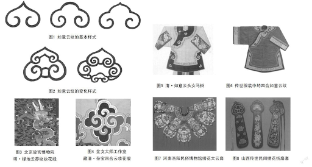
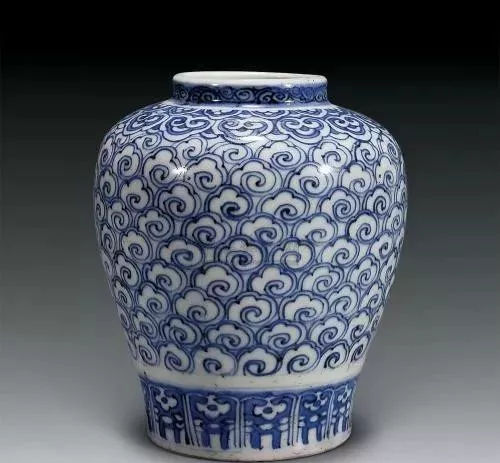
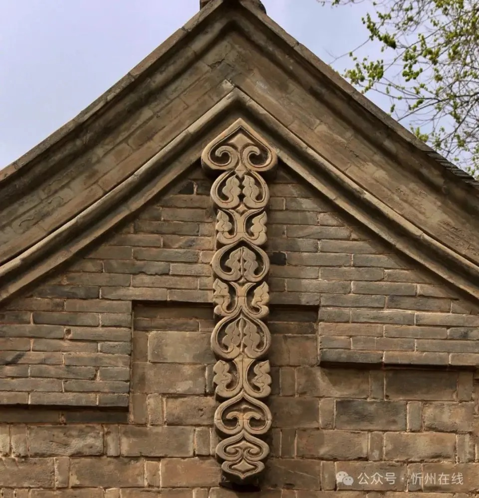
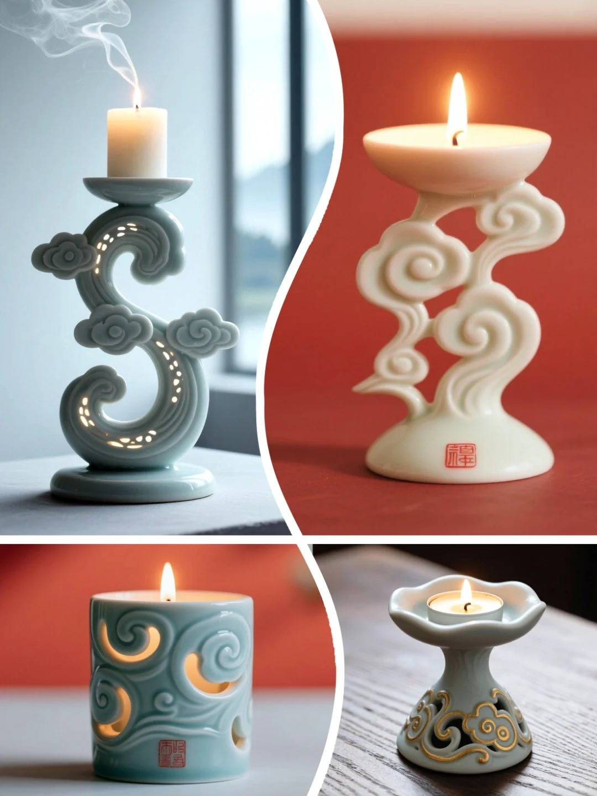
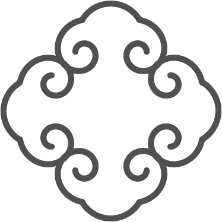

Overview of the general pattern and some traditional usage. Image Credit: [Insert Origin/Author]
Origins
The Ruyi Cloud (如意云纹) motif is rooted in ancient Chinese symbolic art, where "ruyi" literally means "as one wishes" or "according to one's desires." Originally, the word referred to a ceremonial object (a ruyi scepter) that symbolized good fortune, power, and auspiciousness, its curved head often shaped like stylized clouds or lingzhi (a sacred fungus associated with longevity and good luck). By the Ming and Qing dynasties, cloud-like decorative elements became widely known as ruyi motifs in art and design because the cloud shape carried the same auspicious connotations and visual form.
These auspicious cloud forms, part of a broader tradition of xiangyun or "lucky clouds祥云", have an even deeper lineage in Chinese decorative lexicons that appear on bronzes, textiles, and ceramics as early as the Shang and Eastern Zhou periods. They represented not just weather phenomena, but symbolic blessings of harmony, prosperity, and connection between the earthly and celestial realms.
Because of their auspicious symbolism, Ruyi Cloud motifs became widely used across material culture. They decorated textiles and clothing, often appearing on robes, collars, and accessories where repeating curves and swirling forms integrated with other symbolic embroidery. Cloud collars (yunjian / 云肩) are a notable historical example: detachable shoulder pieces in multi-lobed cloud shapes worn with formal garments that symbolized universal harmony and blessings.

Image Credit: Pinterest
Image Credit: NewHanfu.com
Ruyi Cloud–like shapes also appeared in architecture, furniture, and everyday objects. In buildings, cloud bands and cloud–scroll motifs could be carved in woodwork, painted on beams, or woven into screens and lattice panels as ornamentation that connected the earthly structure to auspicious sky imagery. On ceramics and lacquerware, cloud motifs formed borders or central designs that signified well-being and harmony.

A Ruyi Cloud ceramic work. Image Credit: AntiqueKeeper.ca

Ruyi cloud used in architectural decoration. Image Credit: gtimg.com
Modern Usage
Today the Ruyi Cloud motif continues to evolve across art, design, and media. In contemporary architecture, elements inspired by ruyi curves (like undulating bridges and ornamental roof tiles) deliberately evoke auspicious form while integrating modern structural techniques. For example, bridges and public installations sometimes use "ruyi-like" curves to suggest harmony and continuous flow within a landscape.
In fashion and textiles, cloud motifs derived from Ruyi and auspicious clouds are used in embroidery, printed fabrics, and accessory design to signal good fortune and cultural resonance. These patterns can be found in both traditional garments and modern designer collections that blend heritage aesthetics with contemporary styles.
Beyond physical culture, cloud-inspired motifs have entered digital and interactive spaces such as video game art and user interface design, where their rhythmic forms are reinterpreted as repeating pattern sets, background motifs, or animated ornamental elements that bridge ancient symbolism with emergent digital aesthetics.
Cloud motif is frequently used in character outfit design in Video game: Black Myth: Wukong. Image Credit: standard.co.uk

Ruyi cloud motif is commonly seen in modern industrial design. Image Credit: Xiaohongshu
Math & Geometry
Chinese cloud motifs appear in many forms, but this curriculum focuses on the Ruyi Cloud because of its clear structure and repeatable geometry. Compared to freer, more organic cloud patterns, the Ruyi Cloud has a recognizable shape with consistent curves, making it especially suitable for mathematical and computational analysis. Starting with this pattern helps students clearly see how artistic designs are built from geometric rules before moving on to more complex variations.
1. Identify the Base Unit
All Ruyi Cloud patterns begin with a single cloud unit. This unit can be decomposed into two opposing logarithmic spirals joined together. By identifying this smallest repeatable element, students practice decomposition, breaking a complex design into manageable parts.
2. Coordinates and Lines
To construct the cloud digitally, students use Cartesian coordinates to place and control curves. Each point is defined by an (x, y) pair, where x represents horizontal movement and y represents vertical movement. Lines and curves drawn between coordinates form borders; borders combine to create shapes, and multiple shapes form a pattern group. This step connects visual design to precise spatial reasoning.
[Placeholder: 4 pictures and 2 sentences will go here]
3. Symmetry
A complete Ruyi Cloud unit is formed by combining two mirrored spirals. This introduces bilateral symmetry and helps students see how reflection creates balance and structure within a design.
4. Pattern Formation
Using coordinate placement and symmetry, students extend a single cloud unit into a four-fold Ruyi Cloud pattern. Through rotation and repetition, they explore how local rules generate a larger, continuous design.

Software Representation
Translating mathematical forms into generative code allows the Ruyi motif to scale dynamically.
While you can also make it prettier, like a pattern above.

Core looping structure for a four-fold generation.

The visual output from the generative script.